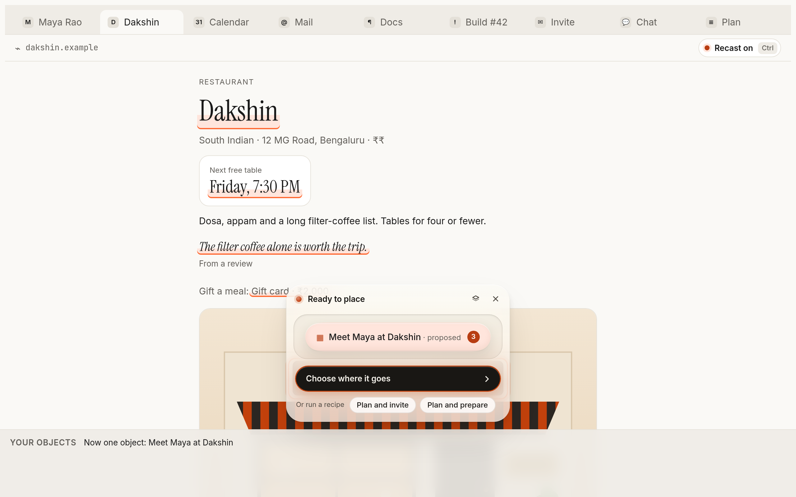
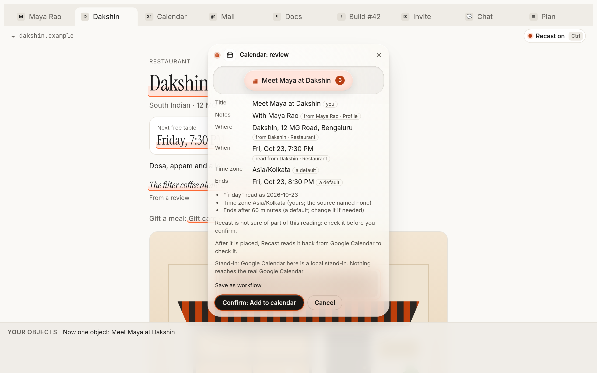
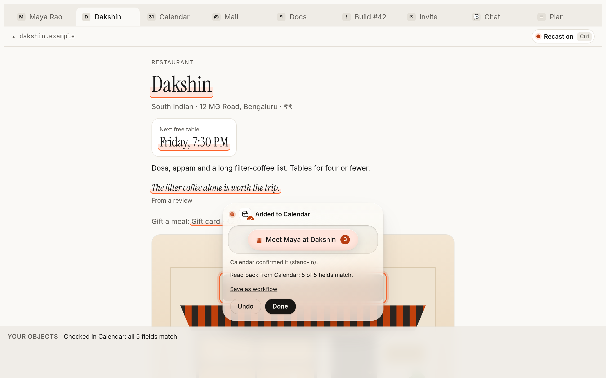
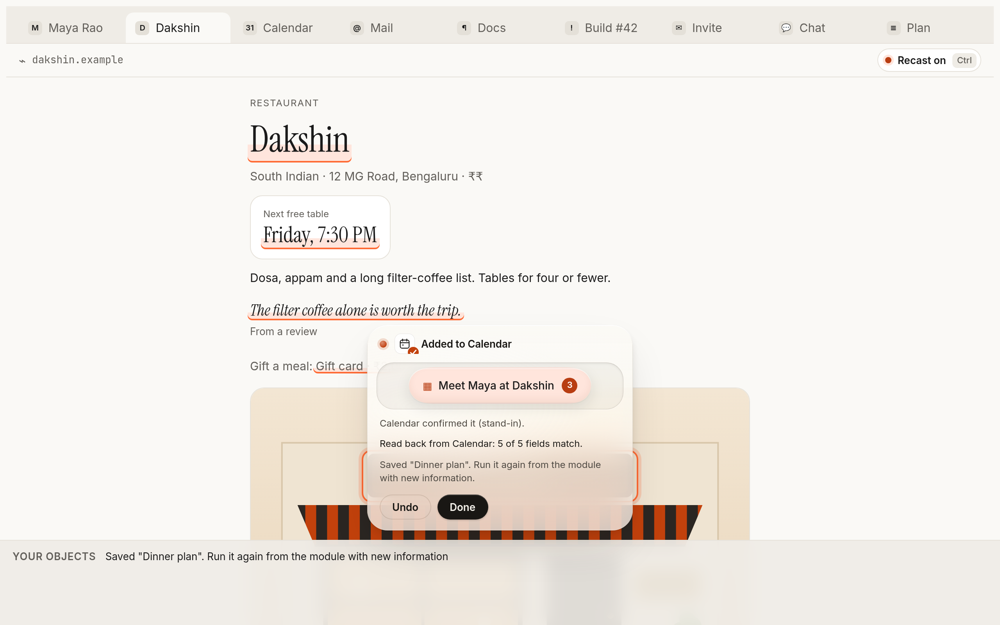

Your context, between apps.
Plans live in pieces: a time in a chat, a place on a website, a person in an email. Today you retype them, and mistakes slip through. Recast lets you select the pieces, press them into one object, see exactly what will happen, and place it. Then it checks the result.
Seven steps, every time
- CaptureSelect a time, a person, a place or a passage on any page or app.
- ComposePress pieces together. They become one object: an event, a message, a note, an issue.
- PreviewSee every field, where each came from, and what Recast assumed.
- ApproveNothing is written until you say so. Risky actions ask you to hold.
- ExecutePlaced in the app you chose, exactly once. A lost answer is checked, never resent.
- VerifyRecast reads it back from the app and compares field by field.
- ConfirmYou see what actually happened, with a link to it, and Undo.
Three pages, one object
Maya's name from her profile, the restaurant from its page, the free table from its booking widget. Pressed together, they become one event. You never retype anything.

Every value names its source
The review shows what goes where, where each value came from, and what Recast assumed (a default end time, your time zone). When two sources disagree, Recast shows both and lets you choose. It never picks silently.

Read back, not assumed
"Success" from an app's API is not proof. After placing, Recast reads the item back and compares it with what you approved: "5 of 5 fields match". If someone or something changed it, Recast shows exactly which field differs.

Your own workflows
Did something useful? Save it under a name. Next time, run it on new information: same review, same approval, same checks. Only the steps are kept, never what you captured.

Where Recast works
Chrome extension
Carry an object across tabs and drop it into a calendar or a draft. Your data stays in the browser session.
Desktop app
On top of any app on Mac, Windows and Linux: select, tap Control twice, and the selection becomes an object right there.
API, SDK and MCP
Developers and AI agents turn raw text into typed objects and place them under the same consent and trust rules. API docs.
Apps it places in
Google Calendar, Outlook Calendar, Gmail drafts, Google Tasks, Google Docs, GitHub issues, Linear issues, Google Maps and Apple Maps (open with directions). Every connector declares what it can do (create, read back, undo) and Recast only offers what it can keep.
What the demo is, and isn't
The demo is the real Recast interface and engine, running entirely in your browser. The calendar, mail, docs and issue tracker in it are local stand-ins, and every review says so. Nothing you do there leaves the page.
One capability has been run against a real provider: creating, deduplicating and undoing a Google Calendar event, done by hand on a test account. The other connectors are tested against stand-ins of their APIs. No outside users yet; that is the next milestone.
In the demo: turn Recast on (the button at the top right, or press Control twice), drag Maya Rao onto the Dakshin tab and drop her on the restaurant's name, then drag the "Friday, 7:30 PM" table onto the object. Choose where it goes, review, confirm.